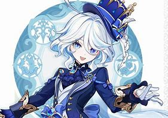
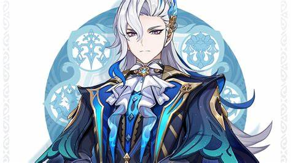
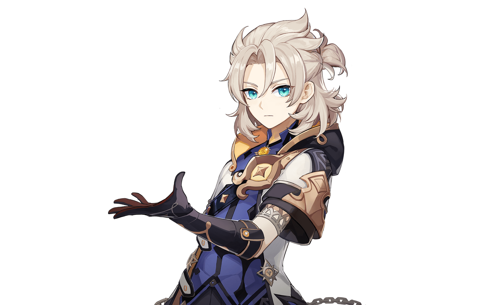
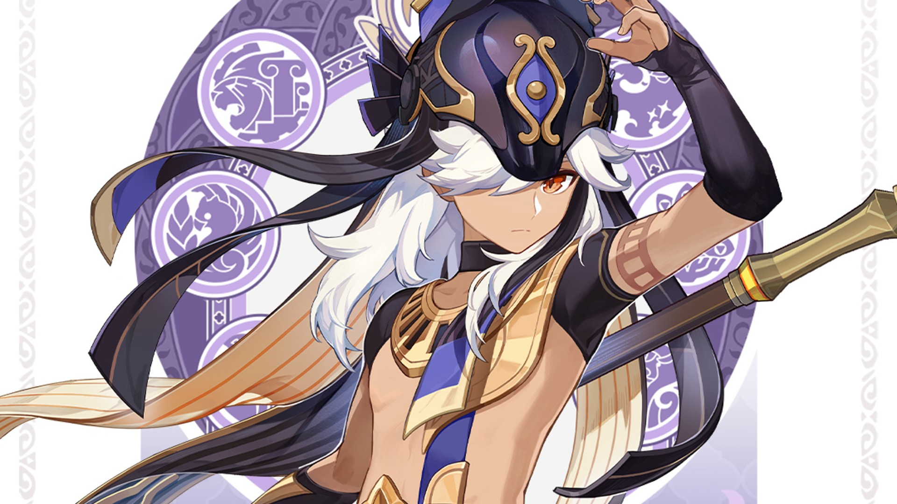

MOST PULLED CHARACTER
Furina

Furina, also known as Furina de Fontaine, is a 5-star Hydro character in Genshin Impact. She was introduced in the Fontaine region as the Hydro Archon, a divine figure who initially presents herself as flamboyant, theatrical, and confident. However, her dramatic persona is later revealed to be a mask—beneath it lies a more vulnerable and introspective individual seeking her own identity.
Neuvillette

Neuvillette is a 5-star Hydro Catalyst character in Genshin Impact, introduced during the Fontaine chapter. He serves as the Iudex of Fontaine, the highest judicial authority in the region, and leads the Marechaussee Phantom, Fontaine’s law enforcement body. Known for his calm, stoic demeanor and unwavering sense of justice, Neuvillette is deeply respected but also somewhat distant, often appearing aloof when it comes to human emotions.
LEAST PULLED CHARACTER
Albedo

Albedo is a 5-star Geo character in Genshin Impact, known as the Chief Alchemist and Captain of the Investigation Team of the Knights of Favonius in Mondstadt. He is a synthetic human created by the mysterious alchemist Rhinedottir, also known as "Gold," using the forbidden art of Khemia—a form of alchemy originating from the lost nation of Khaenri'ah.
Cyno

Cyno is a 5-star Electro polearm user in Genshin Impact, introduced in the Sumeru region. He holds the title of General Mahamatra, making him the highest-ranking enforcer of the Akademiya’s laws. Cyno is known for his strict sense of justice and his role in investigating and punishing those who misuse knowledge within the Akademiya.